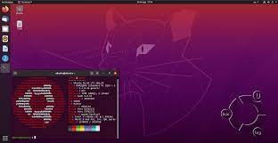
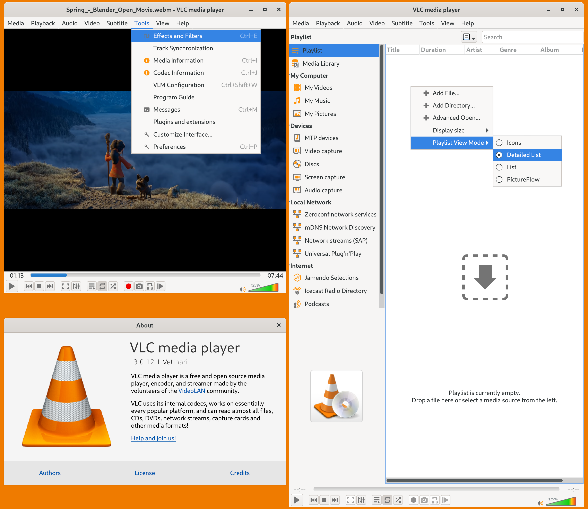
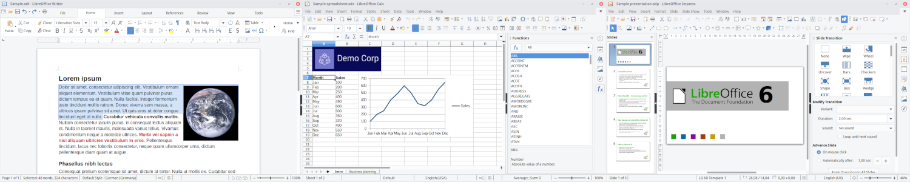

Ubuntu
Download Ubuntu desktop and replace your current operating system whether it’s Windows or macOS or run Ubuntu alongside it.
- Ubuntu Desktop
- Ubuntu Server
- Ubuntu Cloud
VLC media player
VLC media player (previously the VideoLAN Client and commonly known as simply VLC) is a free and open-source, portable, cross-platform media player software and streaming media server developed by the VideoLAN project.
- Effects (desktop version)
- Formats
- ABC
LibreOffice
LibreOffice is a powerful and free office suite, a successor to OpenOffice(.org), used by millions of people around the world. Its clean interface and feature-rich tools help you unleash your creativity and enhance your productivity. LibreOffice includes several applications that make it the most versatile Free and Open Source office suite on the market: Writer (word processing), Calc (spreadsheets), Impress (presentations), Draw (vector graphics and flowcharts), Base (databases), and Math (formula editing).
- Writer
- Calc
- Impress
Open Source Software
It’s amazing how our entire world has become digital. A multitude of devices and gadgets surrounds us, and we can’t imagine our lives without them now. One among the many that have engulfed us in its usefulness is open source software.
- GIMP
- GIMP was launched in 1996 and is one of the most popular open-source image editing software present in the market right now.
- Python
- Python is a programming and scripting language commonly used by developers. That’s why it is said to be one of the best open-source software for developers.
- Mozilla Firefox
- Mozilla Firefox is said to be one of the most successful open source projects globally.
It is a web browser just like google chrome and was released in 2002. It helps the users with a simplistic user interface and an intelligent address bar.
For more information about how to stay active, visit 25+ Top Open Source Software Examples Of 2022